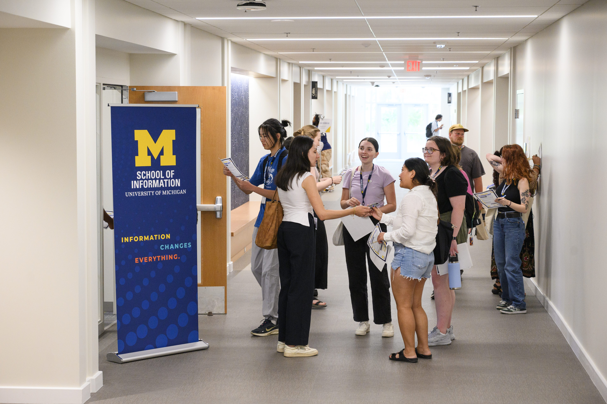

Connect with UMSI Alumni!
Reach out to past UMSI students through the School of Information's LinkedIn page.

Connecting with UMSI alumni is a valuable way for students to build professional networks and gain insight into real-world career paths within the information field. Alumni offer firsthand perspectives on industries, roles, and hiring processes, helping students better understand how their skills and coursework translate into professional settings. These connections can also lead to mentorship, informational interviews, and job or internship opportunities, while fostering a sense of community and long-term engagement within the UMSI network.
How Can I Build My Network?
- Connect with UMSI Alumni: Connecting with UMSI alumni helps students expand their professional network by building relationships with graduates who can share industry insights, offer mentorship, and open doors to career opportunities through their established professional connections.
- Attend a Career Fair: Attending a career fair allows students to meet employers and recruiters directly, make personal connections, and begin building professional relationships that can lead to internships, job opportunities, and future networking connections.
- Join Student Organizations: Joining student organizations helps students build their professional network by connecting them with peers, alumni, and industry partners through shared interests, leadership opportunities, and collaborative projects.
- Nurture Relationships Over Time: Nurturing relationships over time strengthens a student’s professional network by maintaining connections, demonstrating reliability, and creating opportunities for mentorship, referrals, and ongoing career support.

Actionable Steps to Develop your Network Now
- Make New Connections with this Guide: This CDO-developed presentation gives students hands-on steps toward building their network.
- Email a Professional and Connect: Use this document to draft an email to a professional in a field of interest for a potential coffee chat or informational interview.
- Crush Informational Interviews: Use this resource to make the most of your industry chats.
Connect with the UMSI Career Development Office
The UMSI Career Development Office (CDO) offers personalized support through appointments, events, and resource guides. Visit the CDO website or find us on campus to learn more, schedule a coaching session, or just say hello.